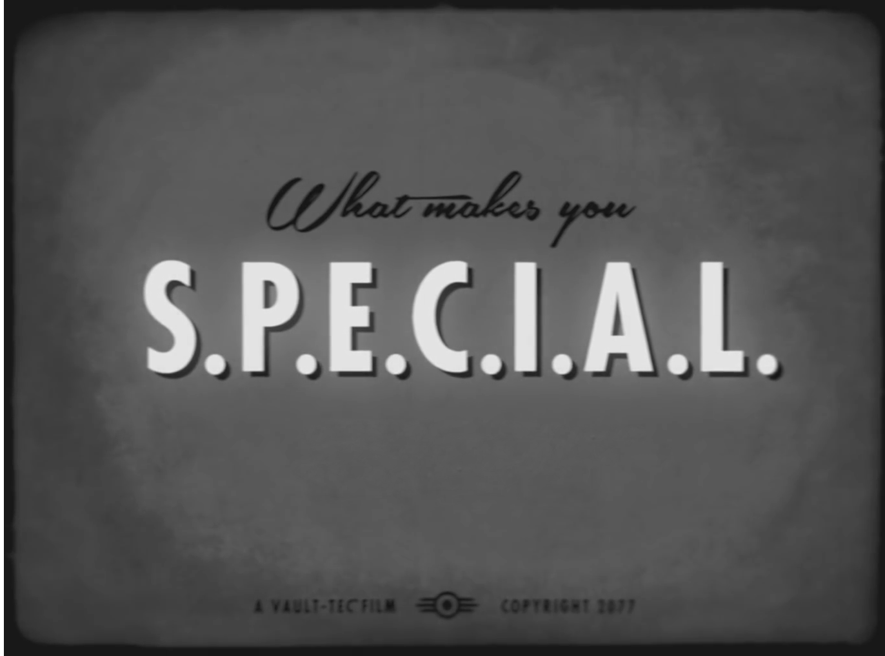

{{ quiz.title }}

{{ category.title }}
Thanks for your time!
Your most developed skill seems to be {{score().name}}.
You know about a strong backbone! Seems you be an outstanding backend expert!
You have a greate awareness! You master the world of JavaScript
frameworks to provide the best possible experience!
You are a resilient type of person! Without DevOps no system will run
and be updated in production in a way that let developers sleep well
and customers trust the solution!
Nobody can resist your charm! You are articulate both verbal and
written, distribution of knowledge for you is as natural as asking for
advice.
Wow, what a high IQ! Or is it the one of your artificial system?
Either way, without mastering databases and big data we'll never
provide additional features based on what we collect every day!
Scrum! But... nobody is perfect, but you adapt to changing
requirements in a professional way, because agile dosen't mean 'no
processes'. Keep fighting for the best delivered incerement possible!
Feeling lucky? You know that with a good team spirit, life is only
half as bad. With SOLID, KISS and YAGNI in mind your future-self will
be able to cope with whatever comes up.